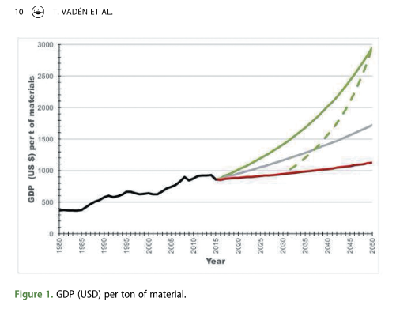

Decoupling
Created Tuesday 30 June 2020
@2020 @ZK
See index:Decoupling
See also NB:TECHNOLOGY STUDIES:Slowdown of innovation
https://bios.fi/en/decoupling-where-it-falls-short-and-a-call-for-collecting-research/
https://thebreakthrough.org/articles/towards-peak-impact
Kovacic et al 2017 Finance, energy and the decoupling: an empirical study
The discrepancy between the optimism created by observations of relative decoupling and the lack of evidence of absolute decoupling is largely explained by the role of trade and outsourcing in the global economy.
Financialisation can indirectly lead to increased GDP, and consequently to relative decoupling. In this kind of ‘financialised decoupling,’ the material footprint stays the same (or grows), but carries ‘on top’ an (even faster growing) enlarged financial sector (Fletcher and Rammelt 2016, Kovacic et al. 2017).
In a recent study, Kovacic et al. (2017) look at EU14 countries between 1995 and 2013. During that time, the energy intensity of the economies fell ca. 20%, thus clearly indicating decoupling. However, at the same time, the financial intensity (defined as the sum of financial assets divided by GDP) grew even faster, ca. 60%. The authors further analytically divide the econ- omy into three parts, FINance, GOVernment and DE* (DE* including all the rest: agriculture, manufacturing, transport, building and so on, i.e., the majority of all physical activity of moving and transforming materials). During the period analysed, the energy intensity of DE* (defined as energy used divided by worked hours) has remained constant; because the energy use of FIN and GOV is in any case relatively small (compared to DE*), the observed decrease of energy intensity is due to the growth of financial assets which has ballooned the GDP. As the energy intensity of DE* has not declined, Kovacic et al. (2017) deduce that ‘the decoupling between energy throughput and economic growth in the EU14 reflects a process of financia- lization, rather than a change in metabolic patterns or production processes.
Wood et al 2018. Growth in environmental footprints and environmental impacts embodied in trade. Resource efficiency indicators from EXIOBASE3
The only exception is Wood et al. (2018), ( V:2018:WoodTradeFootprint )who use EXIOBASE3, a global multiregional input-output (MRIO) model compiled explicitly to investigate the role of international trade in relation to resource efficiency. They calcu- late both production- and consumption-based indices for greenhouse gas (GHG) emissions, energy use, material use, water consumption, and land use for the period of 1995–2011, concluding that:
On a global scale, achievements in resource efficiency, which are characterized by either absolute or strong relative decoupling from GDP, have been limited. [. . .] Material use has shown the strongest increase, from 8.3 to 11.3 tonnes/ capita (+36%), outstripping growth in GDP. We also see an equal growth of GHG emissions to emissions-relevant energy use, [. . .]. Land and water re- sources, which are more directly subject to natural constraints, have increased the least, with blue water consumption rising from 190 to 200 cubic meters/ capita, and the total surface area of land used for productive purposes showing a reduction of 0.3 hectares/capita [. . .] It is the only indicator that presented (small) absolute decoupling from GDP.
2019 Dyrstad Growth eats improvements
V:2019:GrowthEatsImprovements-Dyrstad
Lovering 2019 (The BTI) Does Climate Policy Drive Decarbonization?
Does Climate Policy Drive Decarbonization?
A Response to Le Quéré et al.
Apr 25, 2019
https://thebreakthrough.org/issues/energy/climate-policy-decarbonization
Amid hopes that global CO2 emissions were plateauing, we got bad news last month when the International Energy Agency announced that global carbon dioxide emissions rose almost 2% last year, the highest annual growth rate since 2013, with the power sector accounting for a majority of the new CO2.
Some countries, however, bucked this trend, having managed to achieve meaningful decarbonization over the last decade. How did they do it, and what lessons can be gleaned from their success? A new paper in Nature Climate Change by Le Quéré et al. (2019) suggests that, in the 18 countries that saw significant decarbonization from 2005-2015, a policy-driven shift away from fossil fuels was the primary driver of reduced emissions.
The problem with Le Quéré et al.’s conclusion is that their own analysis doesn’t support it. A close look at their methods and assumptions reveals that economic growth — not climate policy — dominates emissions trends.
It is true that for those 18 countries that saw decarbonization, the largest driver was a decrease in the fossil share of final energy (47% of the decrease in emissions), and that the number of climate policies these countries enacted correlated with decreases in associated emissions metrics (energy use, non-fossil fuel share, or total CO2 emissions). But for the other 61 countries in the study’s two control groups, this wasn’t the case. In fact, in one control group, more climate policies were correlated with higher CO2 emissions. And in the other, more renewable energy policies were correlated with higher shares of fossil fuels.
What’s going on here? Really, it comes down to simple economics. The 18 decarbonizing countries are some of the wealthiest in their sample and experienced much slower economic growth over the study period. So it’s arguably not surprising that they reduced emissions; they very well might have decarbonized in the absence of climate policy.
By contrast, the economies of the non-decarbonizing countries are rapidly growing and industrializing, which fueled their rising energy use (accounting for 75-79% of emissions increase) and fossil share of final energy. Some of these countries did implement climate and energy policies, but the effect gets lost in the noise of growing emissions driven by economic growth.
To be fair, the study’s authors acknowledge the outsize role of economic variables. They caution that if strong economic growth returns in the decarbonizing countries, their progress could reverse. But in leaning so heavily on policy, the authors miss the real story. ...
Vaden et al 2020. Raising the bar: on the type, size and timeline of a ‘ successful ’ decoupling. Environmental Politics
V:2020:DecouplSuccessCriteria-Vaden :

Vaden et al 2020b Decoupling for ecological sustainability: A categorisation and review of research literature
Vadén, T., Lähde, V., Majava, A., Järvensivu, P., Toivanen, T., Hakala, E., & Eronen, J. T. (2020). Decoupling for ecological sustainability: A categorisation and review of research literature. Environmental Science & Policy, 112, 236–244. https://doi.org/10.1016/j.envsci.2020.06.016
Highlights
- We reviewed 179 articles on decoupling published between 1990–2019.
- The papers present evidence of absolute impact decoupling, mainly between CO2 and GDP.
- No evidence of economy-wide, national/international absolute resource decoupling.
- No evidence of the kind of decoupling needed for ecological sustainability.
- In the absence of robust evidence, the goal of decoupling rests partly on faith.
Abstract
The idea of decoupling “environmental bads” from “economic goods” has been proposed as a path towards sustainability by organizations such as the OECD and UN. Scientific consensus reports on environmental impacts (e.g., greenhouse gas emissions) and resource use give an indication of the kind of decoupling needed for ecological sustainability: global, absolute, fast-enough and long-enough. This goal gives grounds for a categorisation of the different kinds of decoupling, with regard to their relevance. We conducted a survey of recent (1990–2019) research on decoupling on Web of Science and reviewed the results in the research according to the categorisation. The reviewed 179 articles contain evidence of absolute impact decoupling, especially between CO2 (and SOX) emissions and evidence on geographically limited (national level) cases of absolute decoupling of land and blue water use from GDP, but not of economy-wide resource decoupling, neither on national nor international scales. Evidence of the needed absolute global fast-enough decoupling is missing.
Kalimeris et al. 2020. Hidden linkages between resources and economy: A “Beyond-GDP” approach using alternative welfare indicators
Abstract
Taking GDP as the standard economic indicator for economic welfare, recent Resources-Economy studies indicate the “dematerialization” of the economy, the so-called decoupling effect. This conclusion seems to alleviate concerns over resource scarcity and limits to growth, and feeds optimism for green growth and sustainability prospects. However, the validity of GDP as the sole and unambiguous measure of the ultimate outcome of the economy has been severely disputed. There is nowadays increasing interest in broader welfare measurements that capture more aspects of economic output and hence constitute better approximations of well-being. The present paper provides an overview of the above discussion and sets out to explore the relevance of three alternative welfare indicators – the Human Development Index (HDI), the Index of Sustainable Economic Welfare (ISEW) and the Genuine Progress Indicator (GPI) – as a basis for evaluating the dependency of welfare and its major engine, the economy, on natural resources. Increasing welfare appears to require a disproportionate use of resources. Strong and increasing dependency on resources at the global level and in giant countries such as China and India may have serious implications for current sustainability policies and the United Nations Sustainable Development Goals.
https://doi.org/10.1016/j.ecolecon.2019.106508
https://www.sciencedirect.com/science/article/abs/pii/S0921800918318482
Wiedenhofer et al. 2020. A systematic review of the evidence on decoupling of GDP, resource use and GHG emissions, part I: bibliometric and conceptual mapping
we systematically identify and screen more than 11 500 scientific papers, eventually analyzing full texts of 835 empirical studies on the relationship between economic growth (GDP), resource use (materials and energy) and greenhouse gas emissions. Part I of the review examines how decoupling has been investigated across three research streams: energy, materials and energy, and emissions. Part II synthesizes the empirical evidence and policy implications (Haberl et al 2020 Environ. Res. Lett. 15 065003). In part I, we examine the topical, temporal and geographical scopes, methods of analysis, institutional networks and prevalent conceptual angles. We find that in this rapidly growing literature, the vast majority of studies—decomposition, 'causality' and Environmental Kuznets Curve analysis—approach the topic from a statistical-econometric point of view, while hardly acknowledging thermodynamic principles on the role of energy and materials for socio-economic activities. A potentially fundamental incompatibility between economic growth and systemic societal changes to address the climate crisis is rarely considered. We conclude that the existing wealth of empirical evidence merits braver conceptual advances than we have seen thus far. Future work should focus on comprehensive multi-indicator long-term analyses, conceptually grounded on the fundamental biophysical basis of socio-economic activities, incorporating the role of global supply chains as well as the wider societal role and preconditions of economic growth.
https://iopscience.iop.org/article/10.1088/1748-9326/ab8429/meta
Backlinks: V:2009:BruunImmateriaalitalous V:2012:JorgensonDecoupling V:2018:WoodTradeFootprint V:2019:VadenOnnistunutIrtikytkentäSuomessa V:2021:HertwichIncreasedFootprint V:2016:TalousKasvunJälkeen-Joutsenvirta:2 Kasvutalouden myytit purettuina:7.106